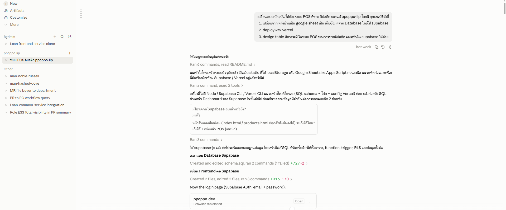
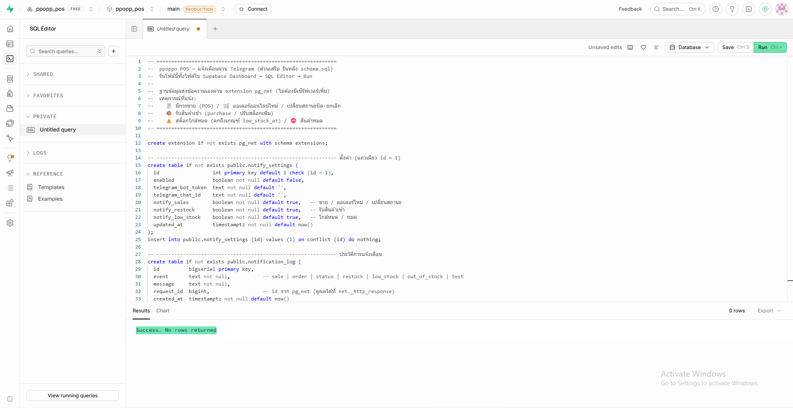
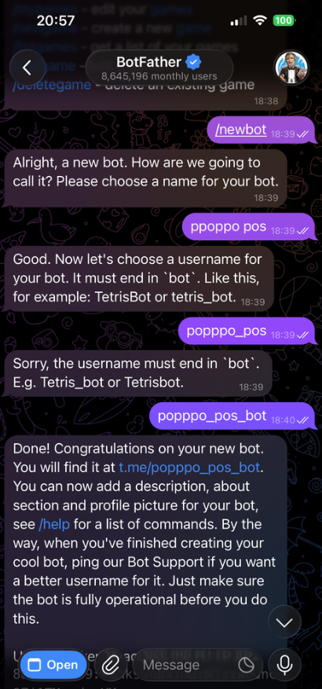
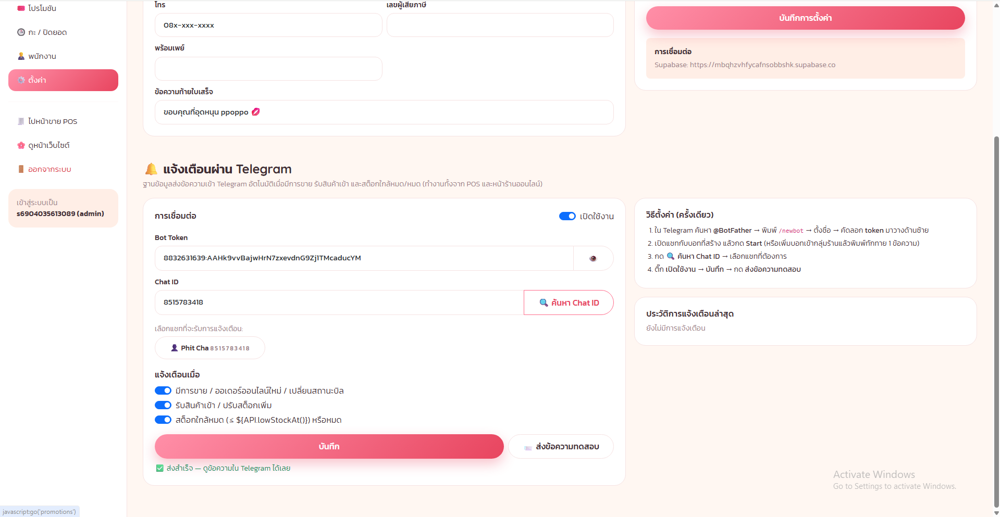
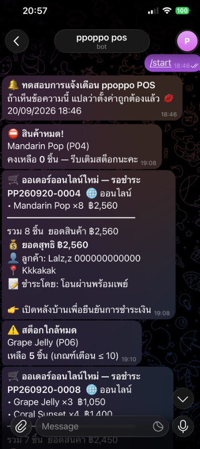

สรุปการทำระบบแจ้งเตือน Telegram
ppoppo POS · แจ้งเตือนเมื่อขาย / รับสินค้าเข้า / สต็อกใกล้หมด-หมด
ppoppo POS · แจ้งเตือนเมื่อขาย / รับสินค้าเข้า / สต็อกใกล้หมด-หมด
ต่อยอดจากระบบ POS ที่ทำไว้แล้ว โดยพิมพ์ prompt สั้น ๆ ระบุ 3 เหตุการณ์ที่ต้องการให้แจ้งเตือน
Claude เลือกวิธี "ให้ฐานข้อมูลส่งข้อความเอง" ผ่าน extension pg_net ของ Supabase จึงไม่ต้องมีเซิร์ฟเวอร์เพิ่ม
และแจ้งได้ครบไม่ว่าจะขายจากหน้า POS หรือลูกค้าสั่งออนไลน์

Claude สร้างไฟล์ supabase/telegram.sql ให้ 1 ไฟล์ นำไปวางใน SQL Editor ของโปรเจกต์ ppopp_pos แล้วกด Run
เมื่อขึ้น Success. No rows returned แปลว่าติดตั้งเสร็จ ไฟล์นี้จะเปิด extension pg_net,
สร้างตาราง notify_settings (เก็บ token) และ notification_log (ประวัติ),
เพิ่ม trigger บนตารางสต็อกและบิล และเพิ่มการแจ้งเตือนเข้าไปใน function create_sale

| 🧾 ขายหน้าร้าน / 🛒 ออเดอร์ออนไลน์ | เลขบิล รายการ×จำนวน ส่วนลด ยอดสุทธิ วิธีชำระ ลูกค้า แคชเชียร์ — ส่งจาก create_sale |
| 📦 รับสินค้าเข้า | trigger บน stock_movements เมื่อประเภทเป็น purchase / ปรับเพิ่ม |
| ⚠️ ใกล้หมด / ⛔ หมด | แจ้งครั้งเดียวตอน "ตกถึงเกณฑ์" (≤ 10) หรือ "กลายเป็น 0" — ไม่สแปมทุกครั้งที่ขาย |
| 🔄 เปลี่ยนสถานะบิล | ชำระแล้ว / จัดส่ง / ยกเลิก (คืนสต็อกอัตโนมัติ) |
ทำในแอป Telegram บนมือถือ: ค้นหา @BotFather (มีเครื่องหมาย ✅) แล้วพิมพ์ /newbot
ตั้งชื่อบอท ppoppo pos และตั้ง username ที่ต้องลงท้ายด้วย bot — ครั้งแรกพิมพ์ popppo_pos BotFather ไม่ยอมรับ
จึงแก้เป็น popppo_pos_bot ระบบตอบ "Done!" พร้อมส่ง token มาให้ (ต้องเก็บเป็นความลับ ห้ามแชร์)
จากนั้นแตะลิงก์ t.me/popppo_pos_bot แล้วกด Start เพื่อให้บอทรู้จักแชทของเรา
/newbot → ตั้งชื่อบอท → ตั้ง username ลงท้าย bot
เข้า หลังบ้าน → ⚙️ ตั้งค่า เลื่อนลงไปที่แผง 🔔 แจ้งเตือนผ่าน Telegram วาง Bot Token แล้วกด 🔍 ค้นหา Chat ID ระบบดึงรายชื่อแชทที่เคยคุยกับบอทมาให้เลือก (ในภาพคือ "Phit Cha" → เติม Chat ID ให้อัตโนมัติ) เปิดสวิตช์ เปิดใช้งาน เลือกเหตุการณ์ที่ต้องการ กด บันทึก แล้วกด 📨 ส่งข้อความทดสอบ ระบบจะรอผลตอบกลับจริงจาก Telegram และขึ้น "✅ ส่งสำเร็จ"

Token ถูกเก็บในตาราง notify_settings ซึ่ง Row Level Security อนุญาตให้เฉพาะบัญชี admin อ่าน/แก้ได้ ลูกค้าหน้าเว็บมองไม่เห็น
หลังตั้งค่า ทดลองใช้งานจริงจากหน้าร้านออนไลน์และหลังบ้าน ข้อความเด้งเข้าแชทบอทภายในไม่กี่วินาที ตามลำดับเหตุการณ์: 🔔 ทดสอบ จากปุ่มในหลังบ้าน → ⛔ สินค้าหมด เมื่อ Mandarin Pop ถูกสั่งจนเหลือ 0 → 🛒 ออเดอร์ออนไลน์ใหม่ PP260920-0004 พร้อมรายการ ยอด และข้อมูลลูกค้า → ⚠️ สต็อกใกล้หมด Grape Jelly เหลือ 5 ชิ้น → ออเดอร์ถัดไป PP260920-0008

notification_log และดูย้อนหลังได้ที่แผง "ประวัติการแจ้งเตือนล่าสุด"